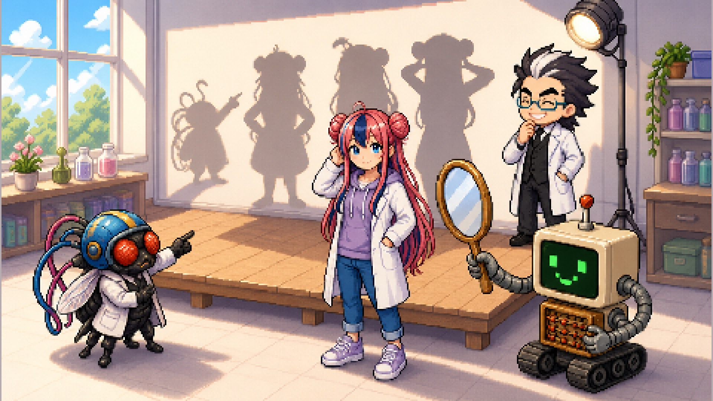
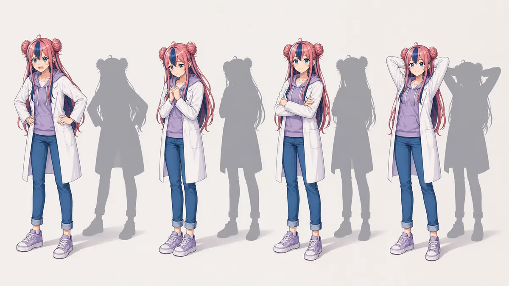
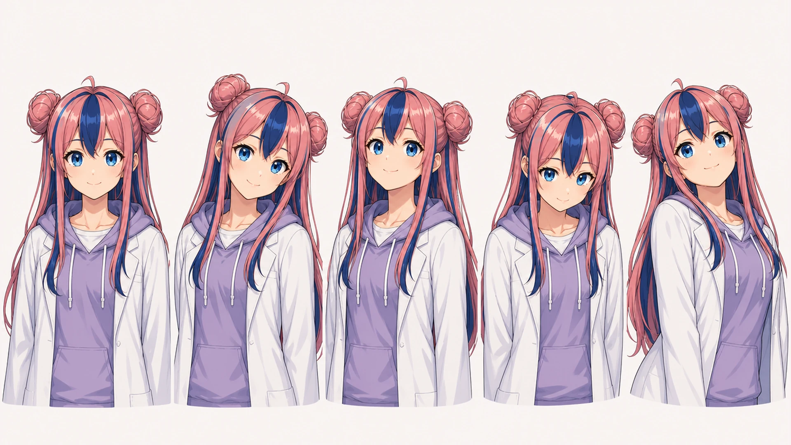
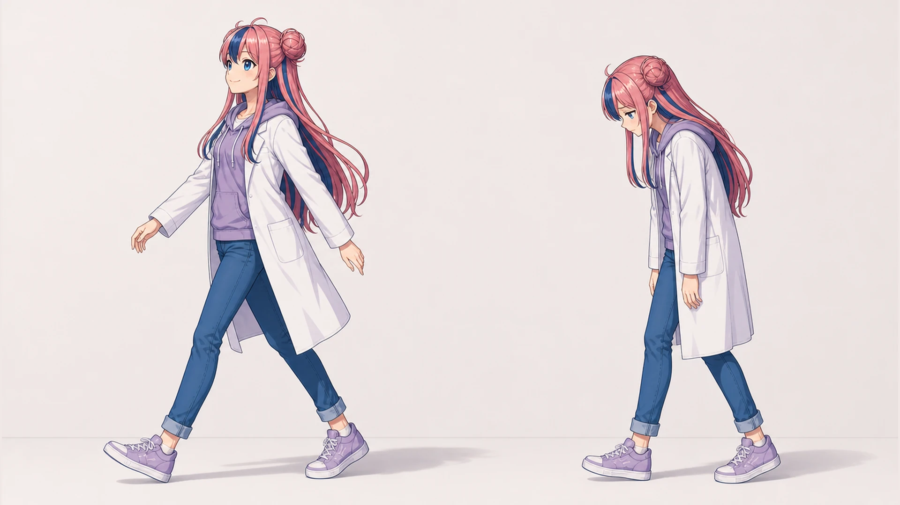
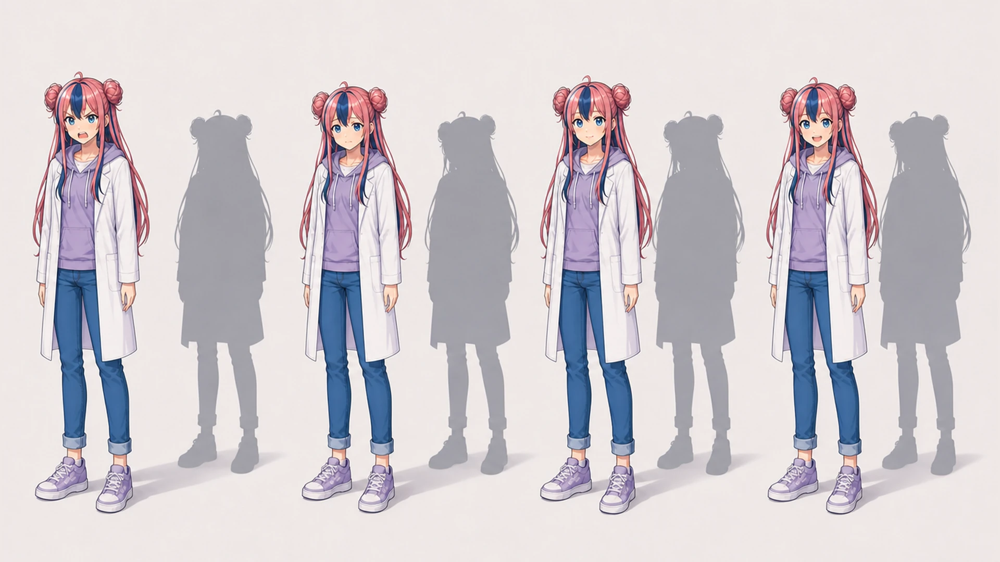
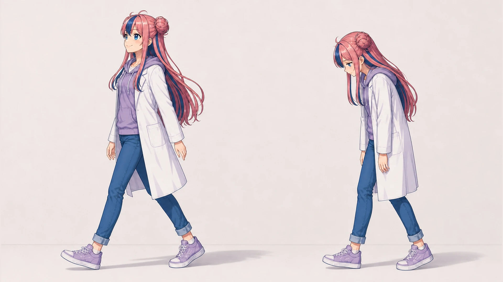
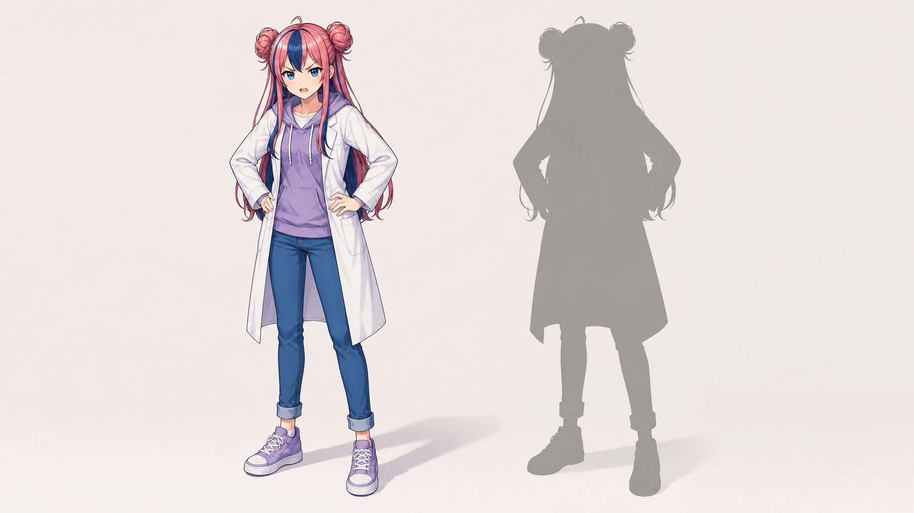
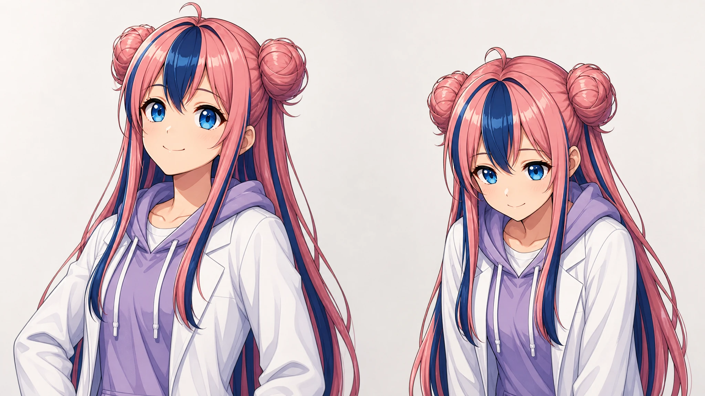
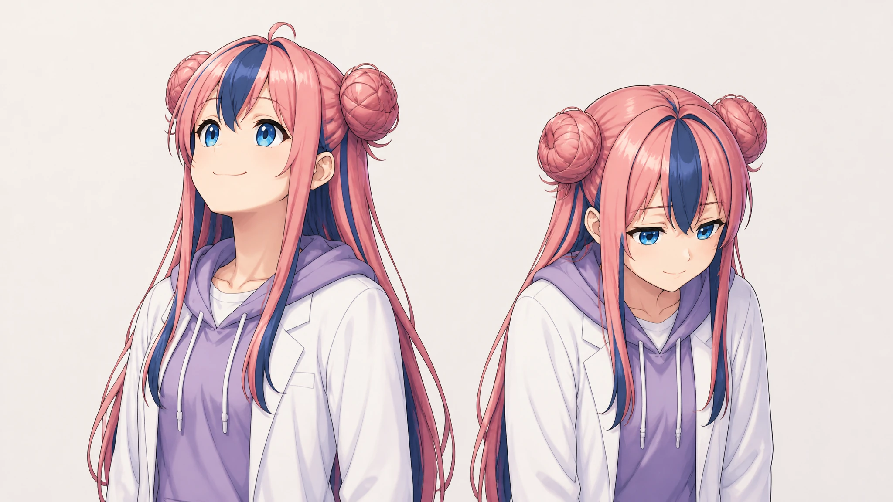

오늘의 과제

박사오늘의 대사는 하나다. "어떻게 할 거야?" 하루가 세 가지 기분으로 말해 볼 거다.

주판봇간단합니다! 눈썹만 세 가지로 바꾸면 됩니다!

초파리 연구원멀리서 보면 눈썹은 안 보여. 실루엣만으로 기분이 읽히는지부터 보자.

조수 하루저, 팔을 어디에 둬야 할지부터 모르겠어요…

모델은 하루입니다. 같은 대사 "어떻게 할 거야?"를 해도 따질 때와 걱정할 때는 서 있는 모습부터 다릅니다. 주판봇은 얼굴부터 그리고, 초파리는 실루엣부터 봅니다.
그림 실력·코드·수식을 몰라도 됩니다. 실험을 눌러 보며 따라오세요.
팔 모양과 몸의 기울기만으로 비난·걱정·편안함이 갈립니다
회의실 문을 열었을 때 팔짱 낀 사람과 턱 괸 사람을 보면, 말을 듣기 전에 분위기를 짐작합니다.
애니메이션 원화에서는 썸네일(작은 밑그림)을 검게 칠해 실루엣만으로 연기가 읽히는지 먼저 봅니다. 읽히지 않으면 얼굴을 그리기 전에 팔과 몸의 각도를 고칩니다.


팔 모양 하나로 기분의 큰 방향이 정해집니다. 허리에 손은 따지는 쪽, 가슴 앞 두 손은 걱정이나 기쁨, 머리 뒤 깍지는 편안함입니다.
같은 팔 모양이라도 고개와 어깨가 갈라 줍니다. 가슴 앞 두 손에 고개를 숙이면 걱정, 고개를 들고 어깨를 올리면 기쁨입니다.
작업에서는 얼굴을 그리기 전에 인물을 검게 칠해 보고, 기분이 읽히지 않으면 팔부터 고칩니다.

AI에게 '화난 하루'를 부탁했더니 얼굴만 찡그리고 몸은 차렷 자세였습니다. 그대로 써도 될까요?
얼굴과 몸이 다른 말을 하는 그림입니다. 'hands on her hips, leaning slightly forward'처럼 팔과 몸의 자세를 함께 적어야 기분이 장면 전체에서 읽힙니다.
얼굴 정중선, 목, 어깨선의 세 기울기를 먼저 잡습니다
좋은 소식을 들으면 어깨가 저절로 올라가고 고개가 들립니다. 나쁜 소식에는 어깨가 처지고 고개가 숙여집니다.
만화 콘티에서는 인물 얼굴을 동그라미 하나로 두고, 정중선과 어깨선 두 줄만으로 컷마다의 감정을 먼저 정합니다. 3D 애니메이션에서도 머리·목·가슴 관절을 함께 돌려야 자연스럽습니다.
고개를 들면 밝은 쪽, 숙이면 어둡거나 조용한 쪽으로 읽힙니다. 표정이 같아도 그렇습니다.
얼굴 정중선과 어깨선이 크게 엇갈릴수록 움직임과 감정이 커 보이고, 나란하면 차분해 보입니다.
어깨를 올리는 동작은 현실에서는 드물지만 그림에서는 효과가 큽니다. 기쁨을 키울 때 한쪽 또는 양쪽 어깨를 올려 봅니다.

AI에게 '기쁜 표정'을 부탁하면 정면을 보고 웃는 얼굴만 나옵니다. 더 기뻐 보이게 하려면?
얼굴보다 머리·목·어깨를 적으세요. 'head tilted slightly up, shoulders raised, chin lifted'처럼 세 부분의 방향을 넣으면 같은 미소도 더 크게 읽힙니다.
몸이 정면이면 얼굴은 완전한 옆까지 가지 못합니다

학교 수학으로 보면 — 덧셈과 범위 — 각 부분의 각도를 더하되, 한 부분은 정해진 범위를 넘지 않습니다.
| 식 조각 | 뜻 |
|---|---|
| 몸 돌린 각 | 가슴과 어깨가 돌아간 정도 |
| 목 돌린 각 | 머리가 가슴에 대해 돌아간 정도 |
| 70° | 이 페이지에서 쓰는 목의 한계(예시값) |

주차할 때 뒤를 보려면 목만으로는 안 되고 몸을 비틀어야 합니다. 그림 속 인물도 똑같습니다.
3D 리깅에서는 목 관절에 회전 한계를 걸어 두고, 그 이상은 가슴 관절이 나눠 돌게 합니다. 손 그림도 같은 원리로 '몸 → 목 → 머리' 순서로 각도를 나눕니다.
목만으로는 70°까지(예시값)입니다. 옆얼굴이 필요하면 몸을 함께 돌립니다.
고개 숙임에도 한계가 있습니다. 입이 겨우 보일 만큼 숙인 뒤로는 몸이 앞으로 숙여집니다. 고개를 젖히면 턱 아래가 보입니다.
작업에서는 '몸 방향 → 목 → 머리' 순서로 각도를 나눠 정하면 목이 꺾여 보이지 않습니다.
AI 그림에서 몸은 정면인데 얼굴만 완전한 옆을 보고 있습니다. 그대로 써도 될까요?
목이 한계를 넘은 그림입니다. 'shoulders turned three-quarters toward the side'처럼 몸 방향을 함께 적거나, 얼굴을 3/4 방향으로 줄입니다.
기분은 보폭과 등의 모양, 손에도 나옵니다
학교 수학으로 보면 — 일차식 — 기분 값이 1 늘 때마다 비율이 0.15씩 늘어납니다.
| 식 조각 | 뜻 |
|---|---|
| 키 | 인물의 키(cm) |
| 0.35 | 보통 걸음의 비율(예시값) |
| 기분 | −1(무거움) ~ +1(가벼움) |
긴장하면 모르는 사이 주먹을 쥐고 어깨가 올라갑니다. 크게 숨을 쉬고 내뱉으면 손이 풀립니다.
워크 사이클(걷기 반복 동작)을 만들 때 애니메이터는 보폭, 상체의 앞기울기, 팔 흔들기의 크기만 바꿔 같은 인물의 기분을 여러 벌 만듭니다.
보폭은 기분 +1에서 80cm, −1에서 32cm입니다(키 160cm, 예시 비율).
가벼운 걸음은 등을 펴고 팔을 크게 흔들며, 무거운 걸음은 등이 둥글고 발이 잘 들리지 않습니다.
긴장은 손에 먼저 나옵니다. 화나거나 초조하면 주먹을 쥐고, 심호흡을 하면 손가락이 펴졌다가 힘이 풀립니다.

AI에게 '슬픈 하루가 걷는 모습'을 부탁했더니 표정만 슬프고 걸음은 씩씩했습니다. 어떻게 고칠까요?
걸음을 문장에 넣으세요. 'rounded back, small steps, feet barely lifted, arms hanging'처럼 등·보폭·팔을 적으면 표정과 걸음이 같은 말을 합니다.
이 부에서 배운 원리를 그림 생성 AI(Genspark 등)로 직접 확인합니다. A는 이 페이지 그림을 실제로 만든 프롬프트, B는 원리를 하나 빼거나 바꾼 비교용 문장입니다.
참고 그림 내려받기: haru_anime_base · sia_anime_base · moa_anime_base · haru_sheet · sia_sheet · moa_sheet · doctor_sheet · fruitfly_sprites_6 · jupanbot_ref_genspark_v0 · pixel_style_ref_prev_cover
얼굴을 지워도 자세만으로 기분이 읽히는지 실제 그림으로 확인합니다.
첨부: refs/haru_anime_base.png, refs/haru_sheet.png
Illustration, wide 16:9. Art style: high-quality anime illustration, clean confident lineart, two-tone cel shading, natural adult proportions. Match the attached reference images exactly (face, hair, colors, accessories). All characters are adults in their early twenties (the Professor is an adult man in his thirties, normal proportions, not chibi); modest outfits exactly as described. Four full-body versions of Haru (adult lab assistant, long straight pink hair with navy streaks and a thick navy streak down the center of the bangs, two round hair buns on top, small ahoge, big blue eyes), wearing lavender hoodie with white drawstrings over a white t-shirt, open white knee-length lab coat, rolled-up jeans, lavender sneakers in a row, each with a flat gray silhouette of the same pose right beside it: 1) hands on her hips, leaning slightly forward, annoyed; 2) both hands held near the chest, head slightly lowered, worried; 3) arms crossed, standing straight, cool; 4) both hands behind her head, relaxed. The silhouettes alone must clearly read as four different moods. Light from the upper left. Plain off-white studio background or a bright clean lab interior. No text, no letters, no numbers, no speech bubbles, no logos, no watermark, no revealing clothing, not childlike, no school uniform, not resembling any famous anime character.
Same image, same layout. Change only: in all four poses, both arms hang straight down at her sides; only the facial expressions differ. Keep the gray silhouettes next to each pose. Still no text.

실제 결과: A는 허리에 손·가슴 앞 두 손·팔짱·머리 뒤 깍지가 실루엣만으로도 네 가지로 갈렸습니다. B는 팔을 모두 내리자 회색 실루엣 네 개가 거의 똑같아졌고, 기분 차이는 작은 얼굴 표정에만 남았습니다. 원리를 뺀 효과가 가장 또렷하게 나온 실습입니다.
보폭·등·팔의 차이가 기분을 전하는지 봅니다.
첨부: refs/haru_anime_base.png, refs/haru_sheet.png
Illustration, wide 16:9. Art style: high-quality anime illustration, clean confident lineart, two-tone cel shading, natural adult proportions. Match the attached reference images exactly (face, hair, colors, accessories). All characters are adults in their early twenties (the Professor is an adult man in his thirties, normal proportions, not chibi); modest outfits exactly as described. Two full-body side views of Haru (adult lab assistant, long straight pink hair with navy streaks and a thick navy streak down the center of the bangs, two round hair buns on top, small ahoge, big blue eyes), wearing lavender hoodie with white drawstrings over a white t-shirt, open white knee-length lab coat, rolled-up jeans, lavender sneakers: LEFT walking happily with a straight back, long stride, arms swinging widely, head up, a light bouncing step; RIGHT walking gloomily with a rounded back, short steps, feet barely lifted, arms hanging, head down. Light from the upper left. Plain off-white studio background or a bright clean lab interior. No text, no letters, no numbers, no speech bubbles, no logos, no watermark, no revealing clothing, not childlike, no school uniform, not resembling any famous anime character.
Same image. Change only: both figures walk with exactly the same posture and stride (straight back, medium steps); only the faces show happy and gloomy. Keep the same framing.

실제 결과: B는 A와 거의 달라지지 않았습니다. 오른쪽 하루는 여전히 등을 굽히고 좁은 보폭으로 걷습니다. 도구가 '슬픈 걸음'의 자세를 그대로 유지한 경우로, 같은 대화에서 차이가 약하면 새 대화에서 B 문장만으로 처음부터 만들어 보세요.
'직접 만들어 보기'가 이미 만든 프롬프트를 비교하는 실습이라면, 연습 과제는 여러분이 직접 문장을 쓰고 이어 붙이는 연습입니다. 단계를 차례로 따라 하고, 마지막에 예상 결과 그림과 견주어 확인표로 점검하세요.
참고 그림 내려받기: haru_anime_base · sia_anime_base · moa_anime_base · haru_sheet · sia_sheet · moa_sheet · doctor_sheet · fruitfly_sprites_6 · jupanbot_ref_genspark_v0 · pixel_style_ref_prev_cover
난이도 기초 · 걸리는 시간 약 15분 · 원리: 1단계 실루엣 · 2단계 머리·목·어깨
표정보다 팔·몸·고개를 먼저 적어 '따지는 기분'이 실루엣만으로도 읽히는 그림을 만듭니다. 만든 뒤 같은 그림을 회색 실루엣으로 바꿔 스스로 검사합니다.
첨부: refs/haru_anime_base.png, refs/haru_sheet.png
새 대화를 열고 참고 그림을 첨부한 뒤, 자세를 먼저 쓴 문장으로 전신을 만듭니다. 감정 낱말(annoyed)은 맨 뒤에 한 번만 씁니다.
Full body of Haru from the attached reference, wearing her lavender hoodie, open white lab coat and jeans. Pose: both hands on her hips, elbows pointing outward, body leaning slightly forward, chin a little down, weight on one leg. Face: inner eyebrows pulled down, mouth slightly open as if asking 'So what are you going to do?'. Mood: annoyed. Match the attached reference exactly (face, hair, colors, accessories). An adult woman in her early twenties, adult proportions. No text, no logos.
같은 대화에 이어 붙여 실루엣 판을 만듭니다. 결과를 원본 옆에 두고, 얼굴 없이도 '따진다'가 보이는지 확인합니다.
Same image. Change only: add a flat gray silhouette of exactly the same pose right next to her. Keep the same framing.
실루엣에서 기분이 약하면 팔만 고칩니다. 예: 팔꿈치를 더 바깥으로, 몸을 더 앞으로.
Same image. Change only: elbows pushed further outward and the upper body leaning more forward. Keep the same framing.
왼쪽에 따지는 하루, 오른쪽에 같은 자세의 회색 실루엣. 팔꿈치가 바깥으로 벌어진 삼각형 두 개와 앞으로 기운 몸통 덕분에 실루엣만 봐도 '따진다'가 읽혀야 합니다.

실제 결과: 허리에 손을 얹은 하루와 같은 자세의 회색 실루엣이 나란히 나왔습니다. 팔꿈치가 바깥으로 벌어진 삼각형 빈틈이 실루엣에서도 또렷해 '따진다'가 읽힙니다. 다만 몸의 앞기울기는 거의 없이 똑바로 서 있어, 3단계(몸을 더 앞으로)를 해 볼 만합니다.
난이도 기초 · 걸리는 시간 약 15분 · 원리: 2단계 머리·목·어깨 · 3단계 목의 범위
표정은 그대로 두고 머리·목·어깨의 방향만 바꿔 '밝은 기분'과 '쓸쓸한 기분'을 만듭니다. 한 번에 하나씩 바꾸는 이어 붙이기 연습입니다.
첨부: refs/haru_anime_base.png, refs/haru_sheet.png
기준 그림을 만듭니다. 미소와 정면 자세만 적습니다.
Upper body portrait of Haru from the attached reference, gentle closed-mouth smile, facing the viewer, shoulders level, head straight. Light from the upper left. Match the attached reference exactly (face, hair, colors, accessories). An adult woman in her early twenties, adult proportions. No text, no logos.
밝은 쪽: 표정은 그대로 두고 고개와 어깨만 바꿉니다.
Same image. Change only: head tilted slightly up and to one side, both shoulders raised a little. Keep the exact same smile and framing.
새 대화에서 기준 그림을 다시 만든 뒤, 어두운 쪽으로 바꿉니다(같은 대화에 계속 붙이면 앞의 변화가 섞입니다).
Same image. Change only: head lowered, shoulders dropped, back slightly rounded. Keep the exact same smile and framing.
두 얼굴의 미소는 거의 같은데, 왼쪽은 밝고 오른쪽은 쓸쓸하게 읽혀야 합니다. 차이를 만든 것은 고개 방향과 어깨 높이뿐입니다.

1차 결과: 두 미소는 거의 같고, 왼쪽은 고개가 들려 밝게, 오른쪽은 고개가 숙여져 조용하게 보입니다. 다만 어깨 높이 차이는 작아 '쓸쓸함'까지는 약합니다. 더 벌리려면 오른쪽에 'shoulders dropped, back slightly rounded'를 한 번 더 붙이세요.
1차에서 약했던 점: 어깨 차이가 작아 쓸쓸함이 약했음 · 첨부: refs/haru_anime_base.png, refs/haru_sheet.png
Illustration, wide 16:9. Art style: high-quality anime illustration, clean confident lineart, two-tone cel shading, natural adult proportions. Match the attached reference images exactly (face, hair, colors, accessories). All characters are adults in their early twenties (the Professor is an adult man in his thirties, normal proportions, not chibi); modest outfits exactly as described. Two upper-body portraits of Haru (adult lab assistant, long straight pink hair with navy streaks and a thick navy streak down the center of the bangs, two round hair buns on top, small ahoge, big blue eyes), wearing lavender hoodie with white drawstrings over a white t-shirt, open white knee-length lab coat, rolled-up jeans, lavender sneakers side by side, with EXACTLY the same gentle closed-mouth smile. LEFT (bright): head tilted up and to one side, chin lifted, BOTH shoulders clearly raised toward the ears, chest open, light and lively. RIGHT (lonely): head clearly lowered, eyes looking down, BOTH shoulders dropped low and rolled forward, back visibly rounded, arms hanging, small and quiet. The shoulder lines of the two figures must be at clearly different heights. Only head, neck, shoulders and back differ; the mouth is identical. Same soft light from the upper left. Plain off-white background. No text, no letters, no numbers, no speech bubbles, no logos, no watermark, no revealing clothing, not childlike, no school uniform, not resembling any famous anime character.

2차 결과(성공): 어깨와 등을 대문자로 강조하자(BOTH shoulders dropped, back visibly rounded) 오른쪽 하루가 고개를 숙이고 눈을 내리깔아 쓸쓸함이 확실해졌습니다. 왼쪽은 턱을 들고 위를 봐 밝습니다. 어깨 높이 차이는 여전히 작지만, 고개와 시선의 차이로 두 기분이 또렷이 갈립니다.
| 항목 | 주판봇 | 초파리 |
|---|---|---|
| 닮음 | 7 | 8 |
| 원리 | 4 | 9 |
| 자연스러움 | 5 | 8 |
| 합계 | 16 | 25 |


점수는 이야기 속 예시입니다. 실제 그림을 평가한 값이 아닙니다.
| 주제 | 한 줄 | 작업에서는 |
|---|---|---|
| 실루엣 | 팔 모양과 몸 기울기만으로 기분의 큰 방향이 갈린다 | 얼굴을 그리기 전에 인물을 검게 칠해 본다 |
| 머리·목·어깨 | 세 선의 방향과 엇갈림이 밝기와 움직임을 정한다 | 얼굴 정중선·어깨선을 먼저 긋는다 |
| 목의 범위 | 얼굴 방향 = 몸 + 목, 목은 한계가 있다 | 모자라면 몸을 함께 돌리고 숙인다 |
| 걸음 | 보폭 = 키 × (0.35 + 0.15 × 기분) | 가벼우면 등을 펴고, 무거우면 둥글게 |
이 페이지에 나온 개념·방법·비유·쓰임을 모았습니다. 검색하고, "설명 보러 가기"로 본문에 돌아갑니다.
지식 색인을 출처와 함께 파일로 내려받습니다. 서지 관리는 BibTeX·RIS, 온톨로지 편집은 Turtle, 그래프 도구는 CSV, 여러 페이지 합치기는 kg.json입니다.